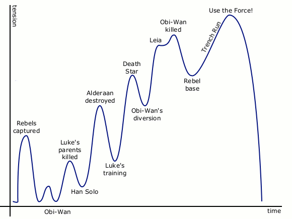

guitar
Warm-up routine
The goal of this routine is to stretch muscles, familiarize with the string, and exercise rhythmic sense.
Do the usual warm-up exercises that walk up and down the fretboard; add variations to it (e.g. alternate finger pattern, skip strings).
Play through tuplets of different numbers can give you a really solid sense of time. I use a Guitar Pro tab for this exercise. The tab is a 4-4 beat that starts with all quarter notes, then quintuplets(5), sextuplets(6), septuplet(7), 8th notes, and nonuplets(9). Then it goes back down, one by one, all the way to quarter notes, and a bit over: triplets, and half notes.
Improvising
Some tips on practicing how to solo:
Follow the interest curve. The interest curve represents the interest / intensity / engagement of audiences over time, and applies to many types of media. It looks like this:

Notice how the tension builds up over time, and becomes most intense right before the ending (Obi-Wan killed, trench run, Use the Force), and simmers down in the ending to provide a sense of resolution (award ceremony).
In a 4-bar phrase, do something interesting that adds tension at the 3rd bar; resolve the tension and bring it home at the last bar.
Another interesting property is that interest curve is fractal; it applies to the flow of tension to a solo, to the structure of the song that solo is in, and to the action of striking the string with your guitar pick, all at the same time.
Related: Extra Credits video on pacing for game design; 起承転結
Add artificial constraints to your solo. Limitation breeds creativity. Some limiters to experiment with:
- Play a solo with long, sustained notes only. Nothing shorter than a half note.
- Play a solo with short notes only. Nothing longer than an 8th note.
- Play a solo where you are only allowed to play 9 notes each phrase (every 4 bars).
- Play a solo where the highest and lowest notes are within 1 octave.
Play along. Find a song you like and play along with it. You could try following the melody and solo. Try not to look up tabs when you do this, instead use your ears a lot.
Keep the chords in mind. Analyze the relationship between the scales and the underlying chords.
Stick to the rhythm, no matter what. If you make a mistake, don't try to fix it, just keep playing.